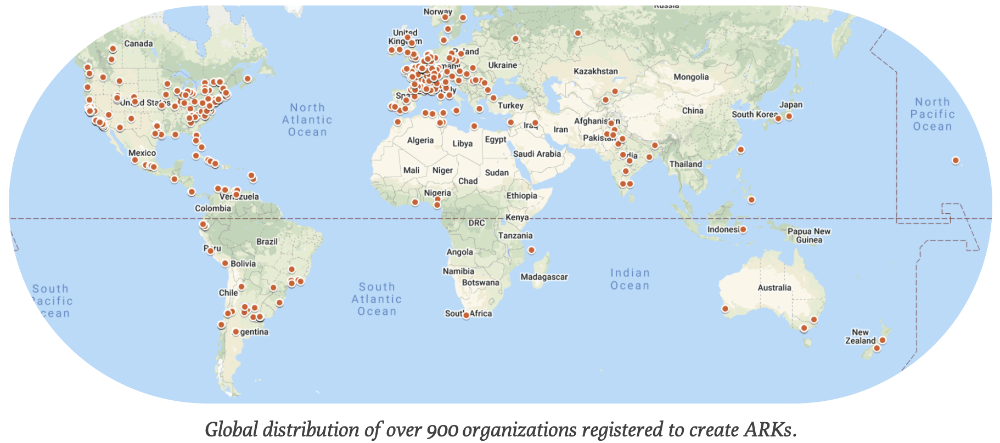

Community update 2022-02-22


We are excited this month to witness the 900th organization to register to use ARKs, and to welcome Romuald Verrier, from the French Ministry of Education, as the newest member of the NAAN curator team.
We are also delighted to announce that the IETF‘s Independent Submissions Stream RFC Editor (ISE) has accepted to work on the ARK specification with a view to publishing it as an Informational RFC. The ISE’s next task is to review the work and then commission some independent reviews. The process from there to a published RFC could be between 3 and 6 months.
Here is an updated snapshot of the ARK community since the 2021 ARK Alliance year end wrap up.
- Organizations registered to assign ARKs: 907 (+30)
- Known number of ARKs in the world: 8.2 billion
- Amount paid for the right to create ARKs: $0
- Average resolutions per day by N2T.net in 2022: 153,749 (+1,399)
Here is a list of the 30 institutions that registered to assign ARKs since 2021-12-16, in the order that they arrived.
- Musée Municipal Ducastel-Vera
- OpenJustice.be
- International Research Journal of Engineering and Applied Sciences
- Eerdelogie
- Musée d’histoire de Nantes – Château des ducs de Bretagne
- Par Cours & Par Thèmes
- Programme pédagogique numérique J’apprends l’Energie
- Interdisciplinary Center for History, Culture and Societies
- Bibliothèque Sainte-Geneviève
- Saooti
- Lilote
- Editora Moan
- Archives Communales de Versailles
- California Academy of Sciences
- Journal of oasis agriculture and sustainable development
- Journal of automation and control problems
- Hit Save!
- Centro de Información y Gestión Tecnológica Guantánamo
- Revista Hombre, Ciencia y Tecnología
- Beneylu
- Vert
- EFELE
- Musée national des châteaux de Malmaison et Bois-Préau
- Archives départementales des Hauts de seine
- Archief voor nationale bewegingen
- Historial de la Vendée
- Journal of Society and Policy
- Photo Elysée – Musée cantonal pour la photographie
- Musée cantonal des Beaux-Arts de Lausanne
- Musée cantonal de Design et d’Arts Appliqués Contemporains
Recent Posts
- Community update 2023-06-13: stickers, tutorials, code of conduct Posted: 2023-06-13 by The ARK Alliance
- Help us to make cultural heritage data more persistent Posted: 2023-05-31 by The ARK Alliance
- ARKs added to new version of the PID Guide Posted: 2023-05-31 by The ARK Alliance
- Wrapping up 2022 with over 1000 ARK organizations Posted: 2022-12-13 by The ARK Alliance
- Images and the promise of ARKs with IIIF Posted: 2022-11-23 by The ARK Alliance
- All Posts RSS